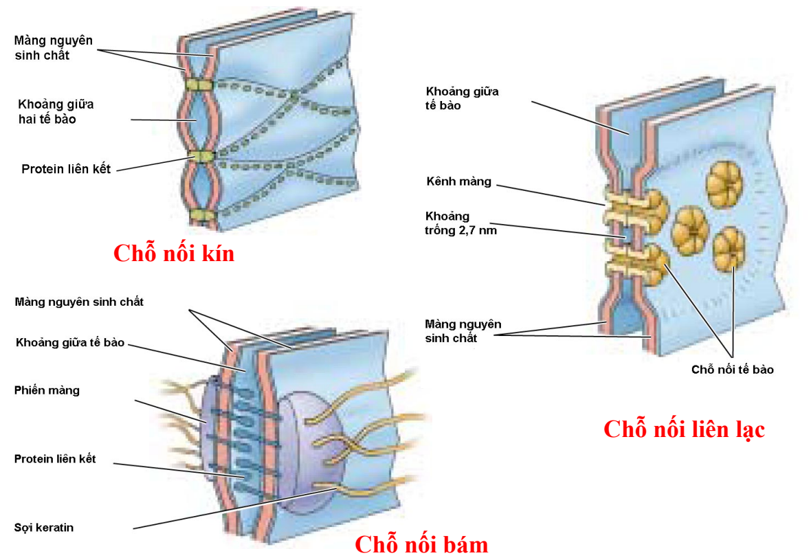

Lớp phủ bề mặt và mối nối tế bào
VN02 · Cấu trúc tế bào · 3 trắc nghiệm và 1 tự luận
Bắt đầu học ↓Học trọn chương và làm bộ 80 trắc nghiệm, 15 tự luận
Sau buổi này
- Nối vách vi khuẩn và cấu trúc bề mặt với chức năng.
- Phân biệt liên kết bít kín, chịu lực và trao đổi trong mô.
Gợi nhớ
Dự đoán cấu trúc cần để chặn chất đi giữa hai tế bào, truyền lực qua mô và trao đổi phân tử trực tiếp.
Học kiến thức qua hình
Quan sát hình minh họa

Hình so kiểu bít khoảng gian bào, liên kết cơ học và kênh trao đổi.
Quan sát · Trong hình, tìm nơi khe hai màng được bít, nơi sợi keratin gắn vào mối nối và nơi có kênh nối hai bào tương.
Dự đoán · Nếu một mô vẫn chịu kéo nhưng chất đánh dấu dễ đi qua khe giữa tế bào hơn, cấu trúc nào trong hình nên kiểm trước?
Mở giải thích sau khi dự đoán
Chỗ nối kín hạn chế đường đi qua khe. Hệ chỗ nối bám gắn với sợi keratin có vai trò chịu lực riêng, nên khả năng chịu kéo có thể còn dù hàng rào khe suy yếu.
| Dấu hiệu bị mất | Cấu trúc cần xem |
|---|---|
| Hàng rào giữa hai tế bào biểu mô | Chỗ nối kín |
| Sức chịu kéo của mô biểu mô | Desmosome và hệ sợi trung gian |
| Trao đổi chất nhỏ trực tiếp ở mô động vật | Chỗ nối khe |
| Liên hệ bào tương qua vách thực vật | Cầu liên bào |
Một tế bào có thể dùng nhiều kiểu mối nối cùng lúc.
Đọc hình để tự rút ra cơ chế
Quan sát · Ở dải biểu mô X, chất đánh dấu đi qua khe dễ hơn, nhưng mô vẫn chịu kéo tốt.
Dự đoán · Bạn sẽ kiểm chỗ nối kín hay desmosome trước?
Mở giải thích sau khi dự đoán
Chỗ nối kín trực tiếp hạn chế dòng qua khe. Khả năng chịu kéo còn tốt khiến lỗi desmosome ít phù hợp hơn với dấu hiệu ban đầu.
Bề mặt vi khuẩn
Vách chứa peptidoglycan giúp giữ dạng và chống áp lực thẩm thấu. Mô hình Gram dương có lớp peptidoglycan dày; Gram âm có lớp mỏng hơn và màng ngoài. Capsule là lớp ngoài có thể hỗ trợ bám hoặc bảo vệ; roi là cấu trúc vận động. Slide nêu FtsZ trong phân chia và MreB có liên quan hình thái ở nhiều vi khuẩn hình que.
Bề mặt động vật
Glycocalyx là lớp carbohydrate phía ngoài; vi nhung mao làm tăng diện tích trao đổi. Chỗ nối kín hạn chế đi qua khe giữa tế bào; desmosome gắn với sợi trung gian để tăng chịu lực; chỗ nối khe cho một số ion hoặc chất nhỏ qua giữa các tế bào.
Bề mặt thực vật
Vách cellulose góp phần bảo vệ và định hình; phiến giữa góp phần gắn các vách kề nhau. Cầu liên bào là kênh xuyên vách cho các tế bào thực vật trao đổi có kiểm soát.
Liên hệ thực tế
Hình mặt cắt biểu mô cho biết đâu là mặt tiếp xúc môi trường và các đường đi qua hoặc giữa tế bào. Gắn từng dấu hiệu với đúng đường đi trước khi giải thích.
Cụm bài tập
Bộ ảnh bề mặt tế bào
Ba ảnh dạy học ghi các dấu hiệu độc lập. Mẫu X là biểu mô động vật tăng rò qua khe nhưng vẫn chịu kéo. Mẫu Y là mô thực vật còn vách, thấy kênh xuyên vách nối hai tế bào. Mẫu Z là sơ đồ vi khuẩn có màng ngoài và lớp peptidoglycan mỏng.

X: rò qua khe nhưng còn liên kết chịu kéo. Y: kênh nối qua vách. Z: một lớp peptidoglycan mỏng nằm giữa hai màng.
Đối chiếu bài làm
Chọn một chỗ còn phân vân. Giải thích lại bằng lời của mình rồi thử một câu cùng dạng.